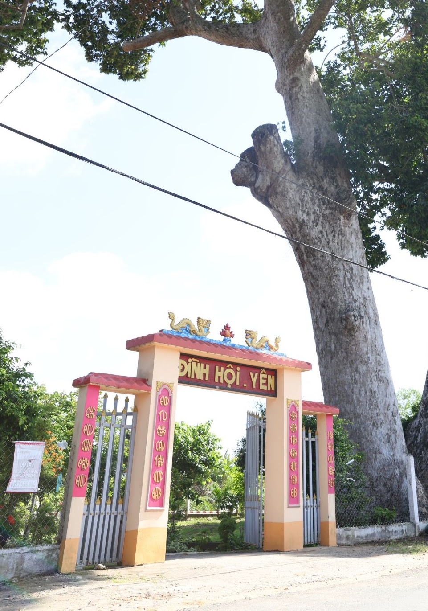
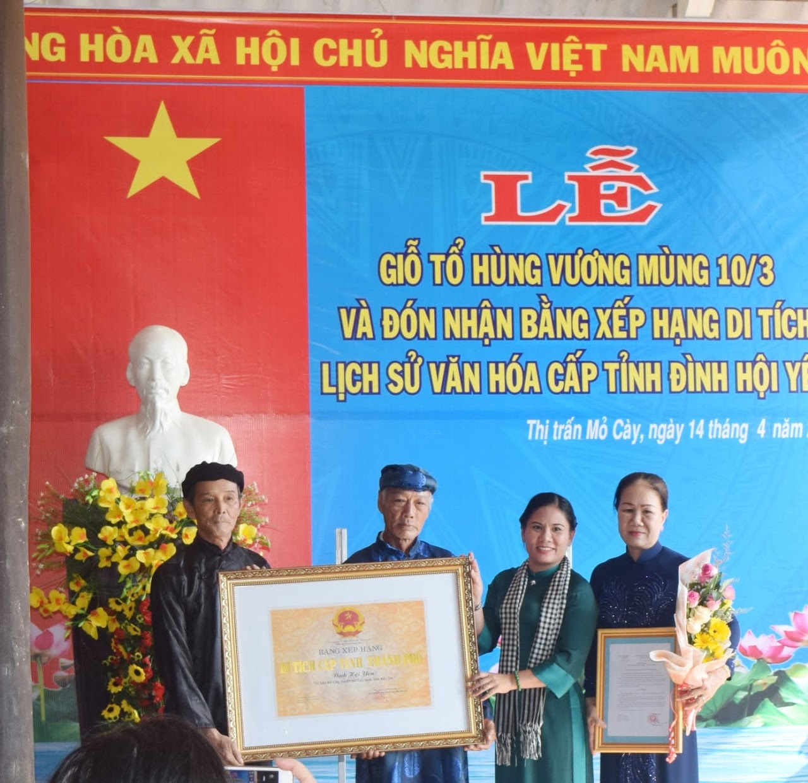
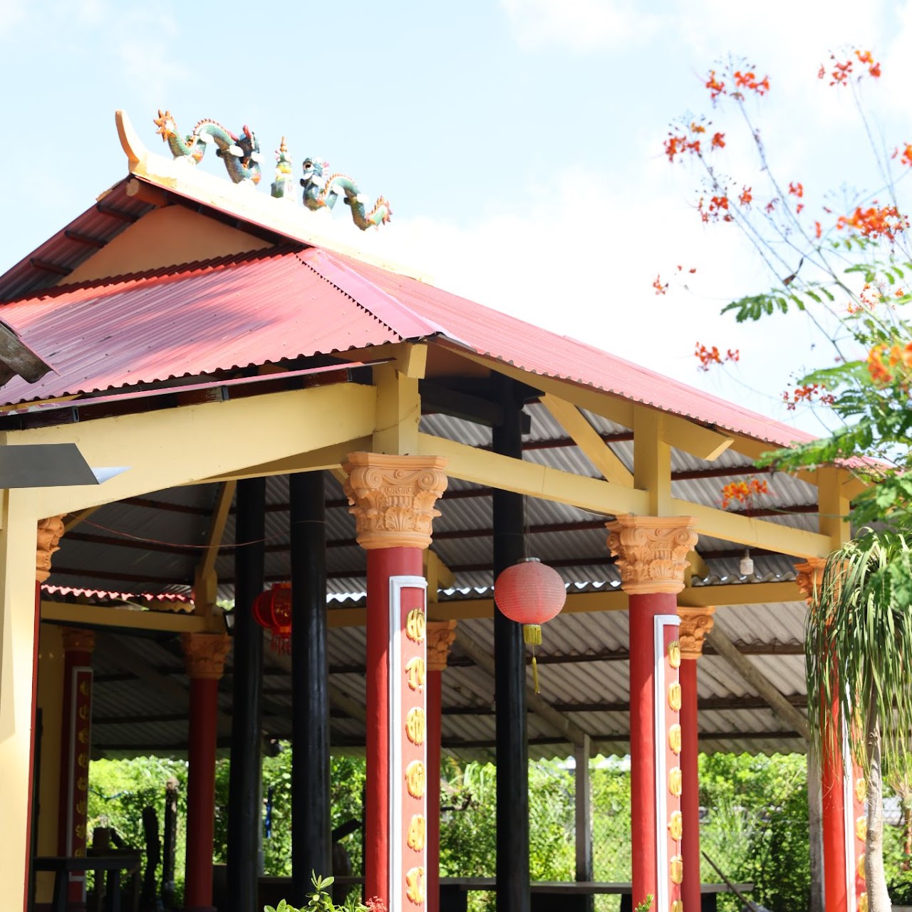
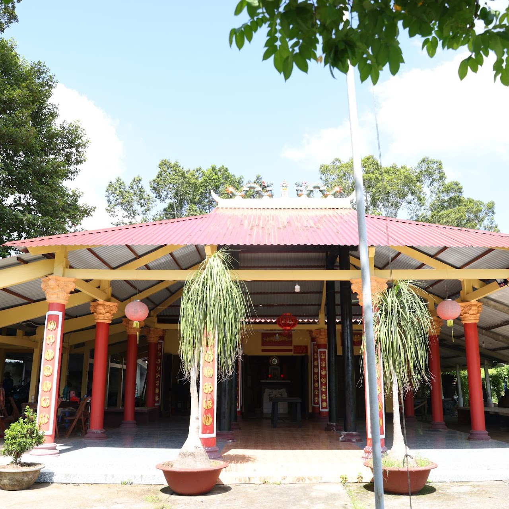
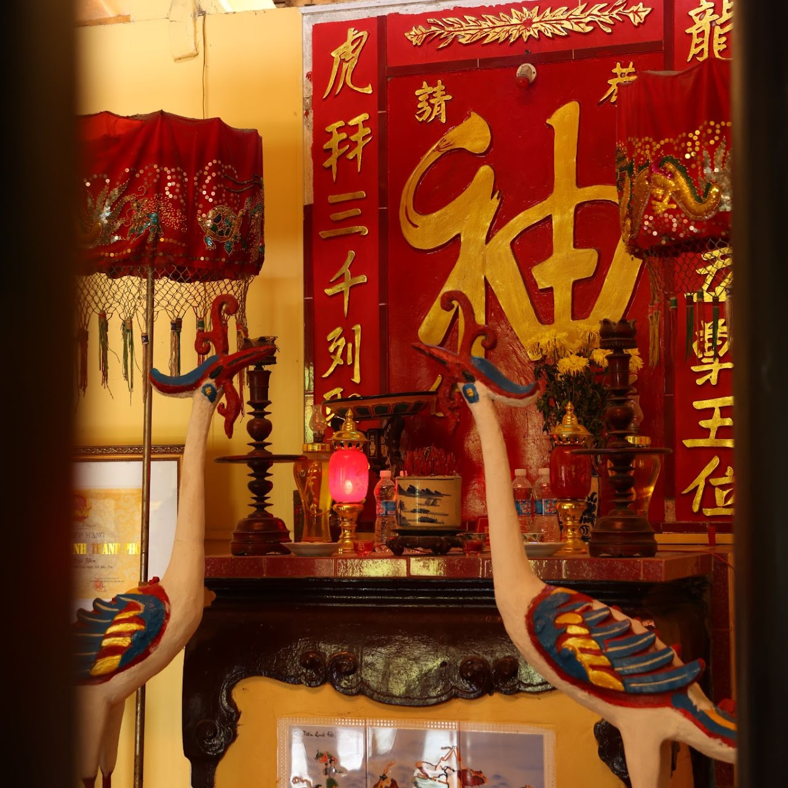
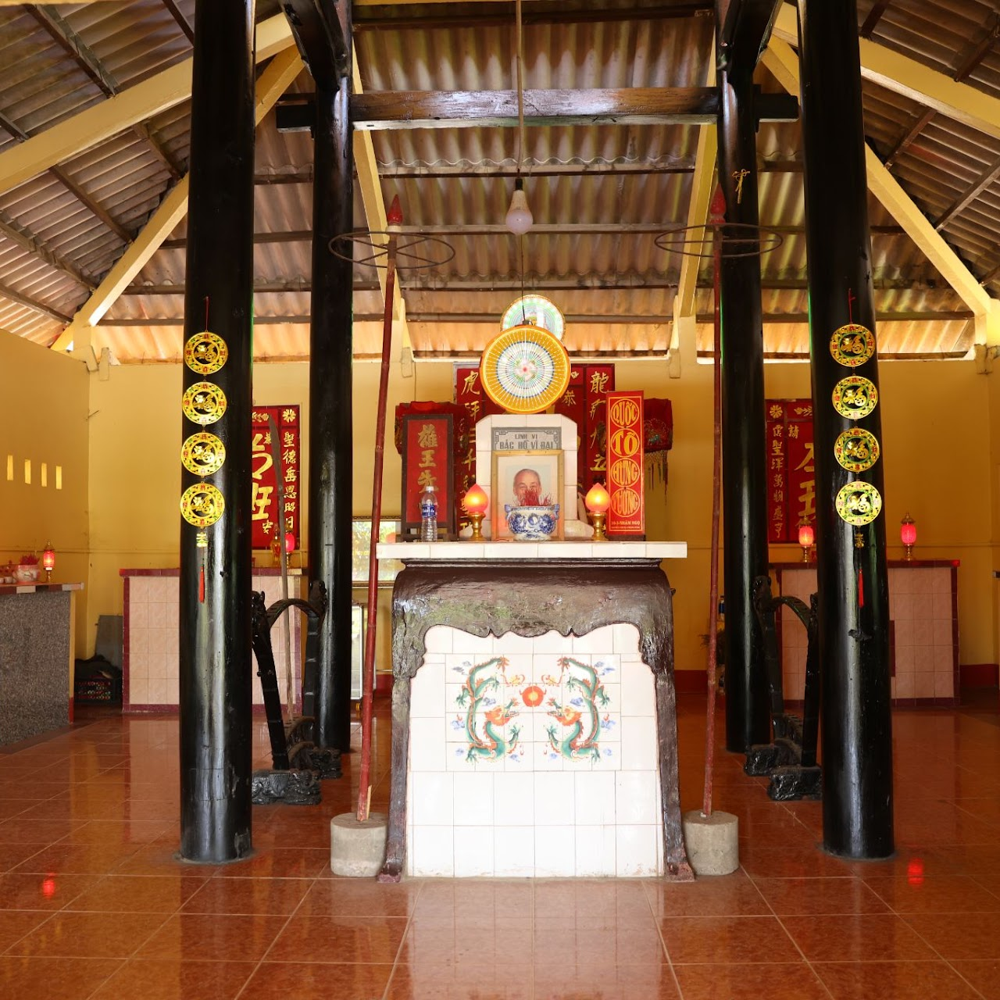
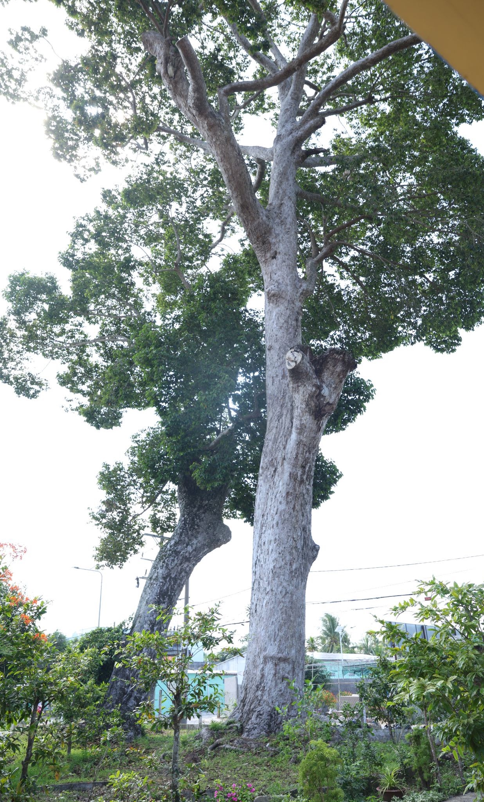
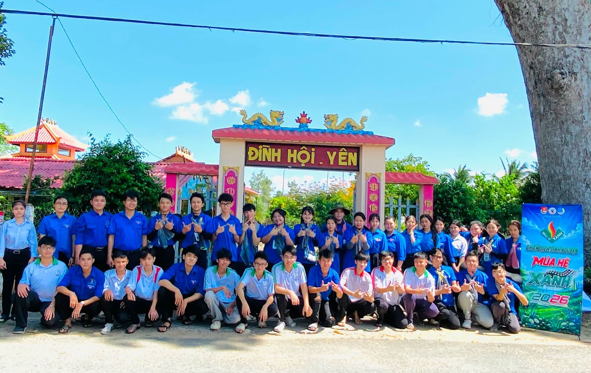

TỔNG QUAN

Cổng Đình Hội Yên
- Đình Hội Yên là di tích lịch sử - văn hóa cấp tỉnh, tọa lạc tại ấp Hội Yên, xã Mỏ Cày, tỉnh Vĩnh Long (trước đây là khu phố 5, thị trấn Mỏ Cày, huyện Mỏ Cày Nam, tỉnh Bến Tre). Đây là một trong những ngôi đình có bề dày lịch sử, gắn liền với quá trình hình thành vùng đất Mỏ Cày, đời sống tín ngưỡng của người dân địa phương và phong trào đấu tranh cách mạng trong thời kỳ kháng chiến.
- Đình được xây dựng từ năm 1883, khi thuộc địa phận thôn Đa Phước, tổng Minh Đạt, hạt Bến Tre. Ban đầu, đình được dựng bằng những vật liệu sẵn có tại địa phương để làm nơi Nhân dân thờ Thành hoàng, cầu cho quốc thái dân an, mưa thuận gió hòa, mùa màng bội thu và cuộc sống bình yên.
- Trải qua hơn một thế kỷ tồn tại, Đình Hội Yên đã chứng kiến nhiều biến cố lịch sử của quê hương và dân tộc. Trong hai cuộc kháng chiến chống thực dân Pháp và đế quốc Mỹ, ngôi đình nhiều lần bị tàn phá nghiêm trọng.
- Năm 1947, đình bị cháy, gây hư hỏng nặng. Đến cuộc Tổng tiến công và nổi dậy Xuân Mậu Thân năm 1968, sắc thần của đình tiếp tục bị cháy, chỉ còn lưu giữ được một phần rất nhỏ. Sau ngày đất nước thống nhất, bằng sự đóng góp công sức và vật chất của Nhân dân địa phương, đình từng bước được tu bổ, phục dựng để tiếp tục là nơi sinh hoạt văn hóa, tín ngưỡng của cộng đồng.
- Ngày nay, Đình Hội Yên nằm cạnh UBND xã Mỏ Cày, có vị trí thuận lợi, cảnh quan xanh mát và không gian trang nghiêm. Cổng đình được xây dựng bằng bê tông cốt thép theo kiến trúc tam quan truyền thống, hướng ra đường Công Lý, tạo nên vẻ uy nghi và cổ kính.
GIÁ TRỊ LỊCH SỬ CÁCH MẠNG

Đình Hội Yên được công nhận là
Di tích lịch sử - văn hóa cấp tỉnh năm 2019
- Không chỉ là nơi sinh hoạt tín ngưỡng dân gian, Đình Hội Yên còn là địa điểm ghi dấu nhiều sự kiện lịch sử quan trọng của phong trào cách mạng tại Mỏ Cày.
- Trong giai đoạn chính quyền Ngô Đình Diệm thực hiện Luật 10/59 – một đạo luật phát xít man rợ, đình từng là nơi ghi lại những tội ác đàn áp cách mạng. Tại đây, Bọn công an Ngô Quyền Bến Tre áp dụng đạo luật đã thẳng tay tra tấn, giết hại các cán bộ, chiến sĩ cách mạng, đồng bào yêu nước hết sức dã man. Những sự kiện đau thương ấy đã trở thành minh chứng cho tinh thần bất khuất của quân và dân Mỏ Cày trong cuộc đấu tranh giành độc lập dân tộc.
- Đình Hội Yên còn gắn bó mật thiết với phong trào Đồng Khởi năm 1960 – mốc son chói lọi trong lịch sử cách mạng tỉnh Bến Tre. Chính vì vậy, đây là một điểm đến quan trọng trong hệ thống các địa chỉ đỏ, góp phần giới thiệu và giáo dục truyền thống yêu nước cho các thế hệ hôm nay và mai sau khi đến tham quan Di tích Quốc gia đặc biệt Đồng Khởi Bến Tre.
- Với những giá trị tiêu biểu về lịch sử và văn hóa, năm 2019, Đình Hội Yên được công nhận là Di tích lịch sử - văn hóa cấp tỉnh, thuộc loại hình di tích lịch sử - cách mạng.
- Đình Hội Yên được công nhận là Di tích lịch sử - văn hóa cấp tỉnh năm 2019
KIẾN TRÚC VÀ CẢNH QUAN
- Không chỉ là nơi sinh hoạt tín ngưỡng dân gian, Đình Hội Yên còn là địa điểm ghi dấu nhiều sự kiện lịch sử quan trọng của phong trào cách mạng tại Mỏ Cày.
- Trong giai đoạn chính quyền Ngô Đình Diệm thực hiện Luật 10/59 – một đạo luật phát xít man rợ, đình từng là nơi ghi lại những tội ác đàn áp cách mạng. Tại đây, Bọn công an Ngô Quyền Bến Tre áp dụng đạo luật đã thẳng tay tra tấn, giết hại các cán bộ, chiến sĩ cách mạng, đồng bào yêu nước hết sức dã man. Những sự kiện đau thương ấy đã trở thành minh chứng cho tinh thần bất khuất của quân và dân Mỏ Cày trong cuộc đấu tranh giành độc lập dân tộc.
- Đình Hội Yên còn gắn bó mật thiết với phong trào Đồng Khởi năm 1960 – mốc son chói lọi trong lịch sử cách mạng tỉnh Bến Tre. Chính vì vậy, đây là một điểm đến quan trọng trong hệ thống các địa chỉ đỏ, góp phần giới thiệu và giáo dục truyền thống yêu nước cho các thế hệ hôm nay và mai sau khi đến tham quan Di tích Quốc gia đặc biệt Đồng Khởi Bến Tre.
- Với những giá trị tiêu biểu về lịch sử và văn hóa, năm 2019, Đình Hội Yên được công nhận là Di tích lịch sử - văn hóa cấp tỉnh, thuộc loại hình di tích lịch sử - cách mạng.
- Đình Hội Yên được công nhận là Di tích lịch sử - văn hóa cấp tỉnh năm 2019




HAI CÂY DẦU CỔ THỤ – CHỨNG NHÂN CỦA THỜI GIAN

2 cây dầu cổ thụ
- Điểm đặc biệt thu hút du khách khi đến Đình Hội Yên là sự hiện diện của hai cây dầu cổ thụ hàng trăm năm tuổi.
- Cây thứ nhất cao khoảng 40 mét, chu vi thân cây khoảng 6,6 mét (đo ở độ cao 1,3 mét so với mặt đất), đường kính thân khoảng 2,2 mét.
- Cây thứ hai cao khoảng 50 mét, chu vi thân cây cũng khoảng 6,6 mét, đường kính thân khoảng 2,2 mét.
- Theo Ban Khánh tiết Đình Hội Yên, hai cây dầu có tuổi đời trên 300 năm. Trải qua mưa bão và sự bào mòn của thời gian, một số cành lớn đã gãy đổ, nhưng cây vẫn sinh trưởng mạnh mẽ, tỏa bóng mát khắp khuôn viên đình.
- Không chỉ có giá trị về sinh thái và cảnh quan, hai cây dầu còn được xem là những "chứng nhân lịch sử", lặng lẽ chứng kiến biết bao sự kiện đau thương nhưng hào hùng của quê hương. Chính tại nơi đây đã từng diễn ra những cuộc bắt bớ, tra tấn các chiến sĩ cách mạng trong thời kỳ thực hiện Luật 10/59.
- Mỗi mùa gió về, những cánh trái dầu xoay tròn trong gió tạo nên một khung cảnh bình yên và thơ mộng. Hình ảnh hai cây dầu cổ thụ đã trở thành biểu tượng cho sức sống bền bỉ, ý chí kiên cường và tinh thần bất khuất của người dân Mỏ Cày – luôn vững vàng trước mọi thử thách của thời gian và lịch sử.
GIÁ TRỊ BẢO TỒN VÀ PHÁT HUY

Đoàn viên, thanh niên ra quân dọn dẹp, vệ sinh khuôn viên Đình
- Ngày nay, Đình Hội Yên không chỉ là nơi diễn ra các hoạt động tín ngưỡng truyền thống của nhân dân mà còn là địa chỉ đỏ phục vụ công tác giáo dục truyền thống cách mạng, nghiên cứu lịch sử, tham quan và tìm hiểu văn hóa địa phương.
- Việc bảo tồn, gìn giữ và phát huy giá trị của Đình Hội Yên góp phần gìn giữ bản sắc văn hóa dân tộc, tri ân các thế hệ cha ông đã hy sinh vì độc lập, tự do của Tổ quốc, đồng thời quảng bá hình ảnh vùng đất Mỏ Cày giàu truyền thống lịch sử, văn hóa đến với đông đảo người dân và du khách.
Quyết định Xếp hạng Di tích lịch sử - văn hóa cấp tỉnh Đình Hội Yên